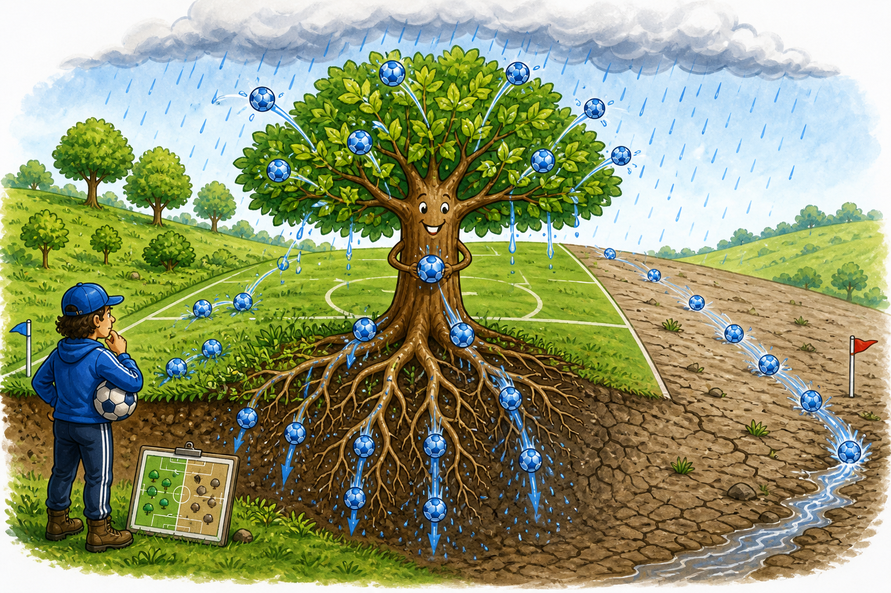

Rooted FC: How Trees Help Rainwater Score

Team Sheet
Leaves United
Leaves defend against the attack of raindrops and stop the soil being smashed into a hard crust.
Stem City
Stems and trunks control midfield, slowing the match down and guiding water safely towards the ground.
Root Madrid
Roots attack the soil, opening channels and creating the scoring chances for water to go underground.
Worms Albion
Worms, fungi, insects and microbes coach from below, building tunnels and helping the whole team play better.
Soil Trafford
Healthy soil is the goalmouth. A good goal holds water after the match and releases it slowly later.
Runoff Rovers
Bare compacted ground loses possession. Water races downhill, carries soil away, and leaves the pitch.
Humans Are the Manager
The manager chooses the team shape: where to plant, where to protect young trees, where to keep animals off while roots grow, and where to watch what happens after rain.
Field Challenge
Stand on a slope after rain and ask:
- Where is water running away fastest?
- Where is the ground bare, hard or compacted?
- Where are roots already slowing water down?
- Where would you put your next defender?